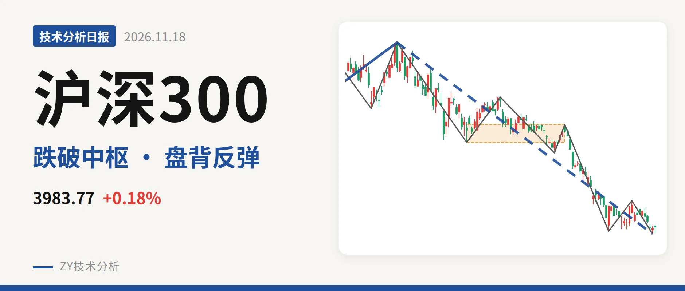
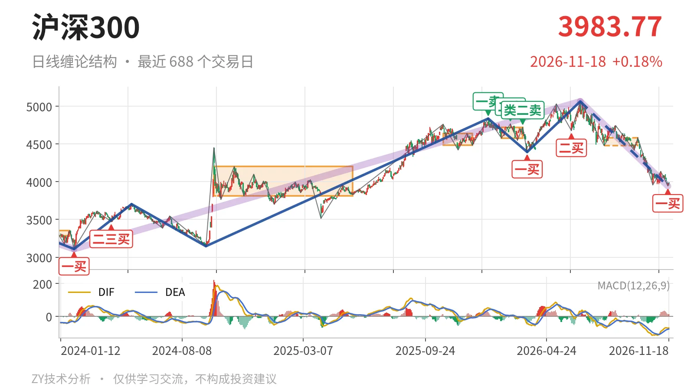
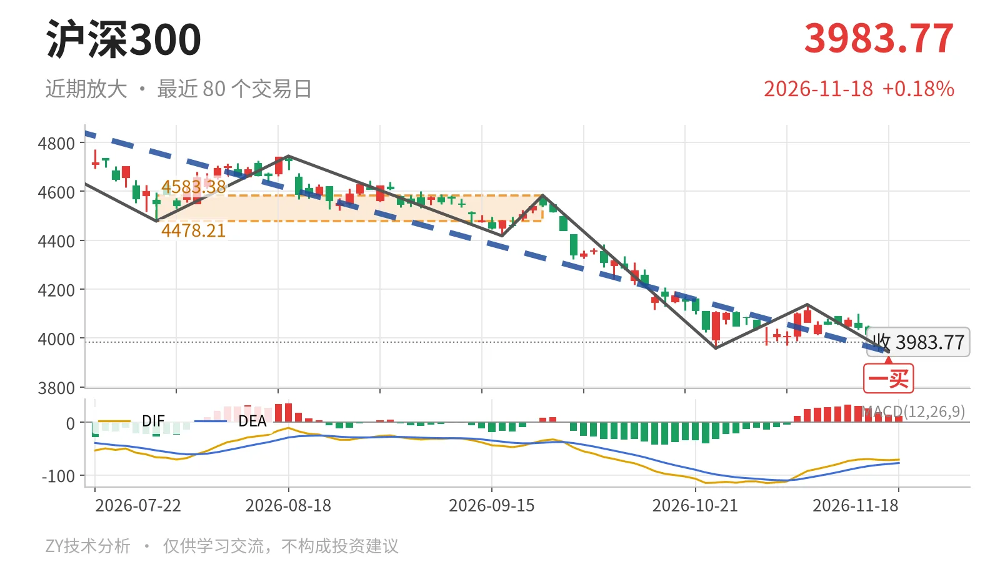

沪深300｜盘背一买后反弹未回4478点

最近日线中枢 4478.21—4583.38点，收盘位于中枢之下
一句话：日线盘背一买后反弹弱，仍未回4478点，下跌段未结束。
📉 走势结构：大级别涨势中的日线回调未走完
当前仍处2024年2月2日至2026年6月23日上涨走势中的回调段，6月23日以来的下跌段还在延续。这轮大级别上涨从3108.35点升至5064.27点，上涨约63%，本身还没有结束；6月23日至11月17日的日线下跌线段已跌约22%，运行7笔，同样没有结束。最新低点3942.38点出现后，只有11月18日一根K线反弹，最高3991.16点，尚不足以构成新的一笔。因此，6月23日以来的日线下跌线段不能被判定反转，暂按大级别涨势中的深调处理。

🧭 中枢与位置：跌破最近中枢，回到下方大中枢
最新收盘3983.77点，低于7月30日至9月22日中枢下沿4478.21点约11.0%，已经回到2024年10月8日至2025年5月30日中枢3812.32—4200.91点之内。近期日线中枢在下移：2月3日至3月17日中枢在4578.21—4720.86点，7月30日至9月22日中枢在4478.21—4583.38点，中轴从4649.53点降至4530.80点。价格不但跌破最近中枢，还重新回到下方大中枢内部，且尚未站回中轴4006.61点，说明当前只能先看下方震荡。
🎯 买卖点：顶部卖点逐级降低，最新一买是盘背
1月13日一卖4836.95点、2月25日二卖4766.56点、3月17日类二卖4720.86点，一个比一个低。但6月23日高点5064.27点创了新高，使1月13日一卖只对应较小级别。3月24日一买4394.29点、6月8日二买4677.57点此后均被跌破，当前只有11月17日一买（盘整背驰）3942.38点暂时有效。它所在的11月5日至11月17日下跌笔已经结束，但随后反弹只有一根K线，尚未成笔。这个一买只能先当弱反弹信号，还不足以改变下跌线段结构。

⚡ 背驰：绿柱面积收窄至-0，DIF未同步新低
最近这段下跌的关键在盘整背驰：9月22日至10月23日下跌笔，价格从4583.38点落到3958.14点，绿柱面积494，DIF低点-115.1；11月5日至11月17日下跌笔，价格微破前低至3942.38点，绿柱面积收窄至-0，DIF低点抬升至-92.5。这就是“新低不新弱”，下行动能明显衰减，也构成11月17日一买的结构来源。不过最新DIF为-70.8，仍在零轴下方，柱值13.0刚翻红，反弹只能先按弱修复处理，尚不能确认下跌段反转。
🔎 关键位置观察：反抽不回4478点，三卖压力仍在
若反抽不能重回7月30日至9月22日中枢下沿 4478点 上方，结构上三卖压力不解除；更近压力看10月23日至11月5日反弹高点 4137点 附近。这个位置距4478点约7.6%，说明反抽力度目前较弱。重新站上 4201点（2024年10月8日至2025年5月30日中枢上沿）之前，下跌更可能只是中枢扩展后的弱震荡。当前收盘3983.77点在最近中枢下方约11%，反弹未成笔，DIF未回零轴，结构偏弱。
⚠️ 本文为基于公开行情数据的缠论技术结构记录，由程序自动计算并生成，仅供学习交流，不构成任何投资建议。市场有风险，投资需谨慎。